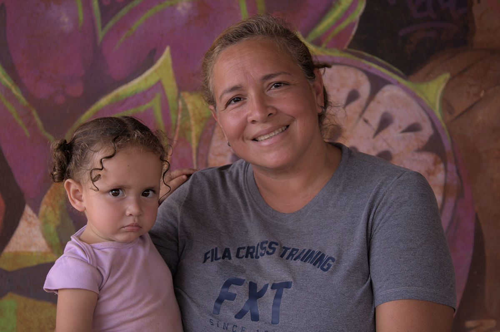
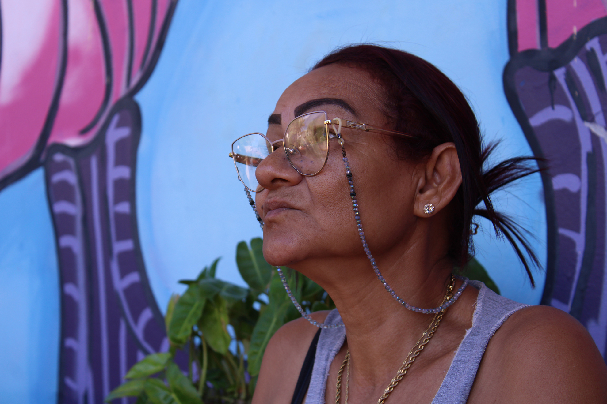

Mujeres Valientes En Vuelo
A história do Brasil, desde a invasão portuguesa no período colonial, ou do deslocamento forçado com o tráfico de escravos africanos para o país, é marcada por processos de migração1. Estes, no entanto, foram se transformando até chegar na contemporaneidade. Como consequência de leis que surgiram e foram modificadas ao longo das décadas; de crises políticas, econômicas e sociais que impulsionaram fluxos migratórios em diversas regiões do mundo; e das posturas restritivas do Norte Global com os imigrantes, em contraponto a políticas de abertura dos países do Sul Global; as últimas décadas apontam alterações, tanto numéricas quanto no perfil dos residentes estrangeiros no Brasil.
Entre os anos de 2010 e 2022, o número de pessoas estrangeiras e brasileiros naturalizados saltou de 592 mil para um milhão, o que representa o maior registro desde a década de 802. Além disso, entre 1920 e 2010, a maioria da população estrangeira residente no país era europeia. Esse índice, no entanto, foi diminuindo gradativamente ao longo das décadas. Segundo o censo de 2022, cerca de 72% da população imigrante no Brasil é latinoamericana3.
O impulso para essa transformação começou com o fluxo de pessoas do Haiti que chegaram ao Brasil a partir de 2010, majoritariamente pelas fronteiras do Acre e Amazonas, devido ao terremoto que devastou o país4.
A partir de 2016, o Brasil também começou a receber um grande fluxo de venezuelanos em seu território, principalmente nas fronteiras de Roraima e Amazonas5. Nessa ocasião, o Governo Federal organizou uma operação de acolhimento para estes imigrantes, cujos números aumentaram ao longo dos anos. Segundo o censo de 2022, do total de 646 mil pessoas estrangeiras registradas no país, 272 mil eram venezuelanas. Isso pode justificar-se pelo reconhecimento da Venezuela como um país de “grave e generalizada violação de direitos humanos” (GGVDH). Tal procedimento simplificou o reconhecimento da condição de refugiados aos venezuelanos, além de permitir que estes se regularizassem por meio da autorização de residência (caso não considerassem estar sofrendo perseguição).
Atualmente, venezuelanos, cubanos e haitianos são os maiores grupos de refugiados no país. O que diferencia um imigrante de um refugiado é se o deslocamento foi uma escolha ou dado de maneira forçada6. A imigração, de maneira geral, é definida como o processo de adentrar um território e nele permanecer. Para que isso aconteça, o sujeito precisa sair, isto é, emigrar de um determinado país. Uma pessoa pode migrar por várias razões - para estudar, aprender uma nova cultura ou buscar melhores condições de vida e trabalho. No Brasil, para manter sua situação regularizada, o imigrante precisa de uma autorização de residência. Nesses casos, majoritariamente, há possibilidade de retornar ao território de origem quando quiser7.
Segundo a Convenção Relativa ao Estatuto dos Refugiados8, de 1951, é considerada refugiada a pessoa que sai de seu país por estar em situação de vulnerabilidade e perseguição devido à raça, religião, nacionalidade, grupo social e/ou posicionamento político. Esse documento foi desenvolvido com o objetivo de lidar com a crise de refugiados europeus no contexto da segunda guerra mundial. Por isso, seu texto trazia limitações temporais e geográficas, que foram atualizadas no Protocolo Relativo ao Estatuto dos Refugiados, de 19679.
Outro documento importante para a garantia de direitos aos refugiados é a Declaração de Cartagena10, de 1984, que amplifica ainda mais o conceito de refugiado, enquanto um sujeito que tem sua vida, segurança e liberdade ameaçadas por contextos de violência generalizada, conflitos internos, violações de direitos humanos e situações em geral que perturbem a ordem pública. A declaração também trata das especificidades da imigração nos países da América Latina e do Caribe, e propõe maior cooperação e compartilhamento de responsabilidades entre os mesmos. Na prática, desde 2004 esses países se reúnem para discutir os desafios do deslocamento e elaborar planos de ação condizentes com o contexto no qual estão inseridos11.
O último plano de ação foi desenvolvido em 2024 no Chile, e deve vigorar até 203412. O documento aborda os riscos que as pessoas sofrem em seus processos de deslocamento - sequestros, violência, desaparecimento, tráfico de pessoas e morte - e pontua a importância de atribuir uma ênfase diferenciada a cada grupo e pessoa em situação de vulnerabilidade, a partir de recortes de gênero, interseccionalidade e interculturalidade. Nesse sentido, afirma a necessidade de se defender os direitos das mulheres, adolescentes e crianças refugiadas. Também reforça a urgência de criar políticas públicas que promovam a interculturalidade, como ferramentas de combate à xenofobia e ao racismo contra os refugiados e apátridas.
A legislação brasileira a respeito da recepção de imigrantes é fundamentada nos direitos humanos, e amparada pelo artigo 5º da constituição13, que garante a igualdade de todos perante a lei, independentemente de serem brasileiros ou estrangeiros residentes no país. Promulgada em 1988, após o fim da ditadura militar, a lei garante o direito à vida, liberdade, igualdade, segurança e propriedade, inclusive para imigrantes e refugiados14.
A partir do amparo nas leis internacionais, regionais e nacionais mencionadas, desenvolveu-se no Brasil, em 1997, a Lei do Refúgio15, documento que dispõe dos direitos e deveres das pessoas refugiadas e estabelece a criação do Comitê Nacional Para Os Refugiados (CONARE), órgão responsável por avaliar as solicitações de refúgio no país.
Entre 2015 e 2024, 454 mil pessoas solicitaram ao país a regularização como refugiadas. 33% das solicitações foram concedidas. Durante o período de análise, que pode durar até dois anos, os solicitantes podem circular no território, com documentação que os concede direitos à saúde, educação e trabalho16. Após ter sua condição legalmente reconhecida, o refugiado recebe uma autorização de residência por tempo indeterminado, além de ser amparado pelo direito internacional e pelo princípio da não-devolução. Todo o aparato jurídico a partir do qual o Brasil atua com os imigrantes mostra uma postura acolhedora, principalmente em comparação às rígidas políticas adotadas por países do Norte Global, o que tem contribuído para o aumento dos números de imigrantes no território17.
IMIGRAÇÃO LATINOAMERICANA EM LONDRINA - PARANÁ
Embora o processo de imigração tenha início nas fronteiras, como no caso dos venezuelanos que chegam ao Brasil pelos estados de Roraima e Amazonas, a ocupação de pessoas estrangeiras se pulveriza por todo o território brasileiro. Segundo o relatório de 2024 do Observatório das Migrações Internacionais (OBMIGRA)18, o sul é a região que mais emprega imigrantes no Brasil. Nesse sentido, muitos fluxos migratórios vão para essa direção motivados pela busca de trabalho.
Segundo dados da OBMIGRA, o Paraná é o 5º estado brasileiro com maior fluxo de imigração. Internamente, Londrina é o 9º município paranaense que mais recebe imigrantes, sendo principalmente venezuelanos. Além da motivação laboral, existem outros fatores que justificam a chegada dos imigrantes no município.
Londrina possui o Programa de Atendimento e Acompanhamento aos Migrantes, Refugiados, Apátridas e suas Famílias19, que acompanha pessoas estrangeiras em situação de vulnerabilidade, com o objetivo de regularizar suas documentações e garantir o acesso a direitos. O programa, de responsabilidade da prefeitura, é realizado em parceria com a Cáritas, uma organização vinculada à igreja católica que oferece acolhimento às pessoas estrangeiras. Além disso, a ocupação Flores do Campo, com grande presença de venezuelanos, movimenta a existência de um fluxo cada vez maior desses imigrantes na cidade.
Segundo a Declaração Universal dos Direitos Humanos20, todo sujeito tem o direito de deixar qualquer país, bem como a liberdade de se locomover e residir nas fronteiras de qualquer Estado. Um imigrante não pode ser considerado ilegal, pois tem o direito de buscar asilo e de ter sua situação regularizada em outro território.
Nesse sentido, é fundamental que exista um envolvimento coletivo na acolhida da pessoa que cruza uma fronteira. Isso significa que as instâncias internacional, nacional, regional e municipal, junto de setores como a academia e o âmbito privado, bem como os próprios refugiados e toda a sociedade civil, devem se engajar no desenvolvimento de estratégias de proteção e integração desses sujeitos.

Nesta secção, você poderá explorar como é feito o acolhimento e a regularização dos documentos dos imigrantes recém chegados em Londrina.

Brenda brincando de posar para fotografias

Em seu comércio, Sorelis conta sobre sua saída da Venezuela

Família da comunidade participando de uma ação de páscoa

Yanetzi Salazar e sua neta durante conversa sobre sua história

Retrato de Diana Carolina

Retrato de Yama Rosa
É nesse contexto de conexão cultural que surge a peça “Mujeres Valientes En Vuelo” de Laura Franchi. Laura é professora de Artes Cênicas na Universidade Estadual de Londrina (Uel) e no ano de 2020 trabalhou com o tema da imigração, ou do “deslocamento humano forçado” como prefere chamar, pela primeira vez. A peça na época foi apresentada de forma online e neste momento, a professora foi confrontada por um ex-aluno se continuaria a contribuir com a causa.

Mas ele me perguntou se eu iria abandonar o tema ou se eu iria continuar trabalhando o tema na minha vida e me tornar uma aliada. E nessa hora eu senti Laura Franchi
Laura coordena o coletivo “Mulheres que migram”, composto por seis mulheres venezuelanas que moram no
conjunto Flores do Campo buscando contar suas histórias através da arte do teatro.
A peça “Mujeres Valientes En Vuelo” é uma obra autobiográfica teatralizada sobre as histórias dessas
mulheres.
É muito complicada a realidade dessas mulheres, elas são mães, são avós. A gente ensaia de domingo porque uma delas trabalha também de sábado e não tem o que fazer. Laura Franchi

A peça foi construída a partir das lutas diárias dessas mulheres que com muito orgulho, desmistificam a ideia de que eram “miseráveis” na Venezuela, contando seus sonhos e seus medos.


“Agora já consigo conversar e vocês já me entendem um pouco pelo menos. Eu tinha esse medo de sair na rua e não ser compreendida…Mas já superei.” Elisia Rojas
Elisia Rojas tem 55 anos, é bisavó e está há quatro anos no Brasil, porém está há dois anos no
conjunto Flores do Campo. O mesmo tempo que faz parte do grupo de teatro, onde conta que aprendeu a
manifestar seus sentimentos.
Para além do teatro como forma de expressão, Elisia enfrentou o medo de não ser compreendida no
Brasil. “Agora já consigo conversar e vocês já me entendem um pouco pelo menos. Eu tinha esse medo
de sair na rua e não ser compreendida…Mas já superei.” Contou de forma orgulhosa de si mesma.
Elisia também reforça que o motivo da sua partida da Venezuela foi motivada pela busca de melhores
condições para sua família e expressa sua gratidão por ter sido muito bem recepcionada e amparada
para que pudesse se estabelecer com segurança.
Neste tempo de permanência de Elisia no projeto, ela conseguiu convencer a colega a juntar-se. Yesenia Alcala também é estrela da peça e está no coletivo há um ano. Uma de suas filhas é bailarina na Venezuela, a outra é uma jovem bailarina aqui em Londrina e protagoniza um dos momentos mais tocantes da peça ao dançar com seu vestido bordado com as cores de seu país.

Elas atravessaram fronteiras, reconstruíram suas vidas e hoje reescrevem, com coragem, o que significa pertencer.